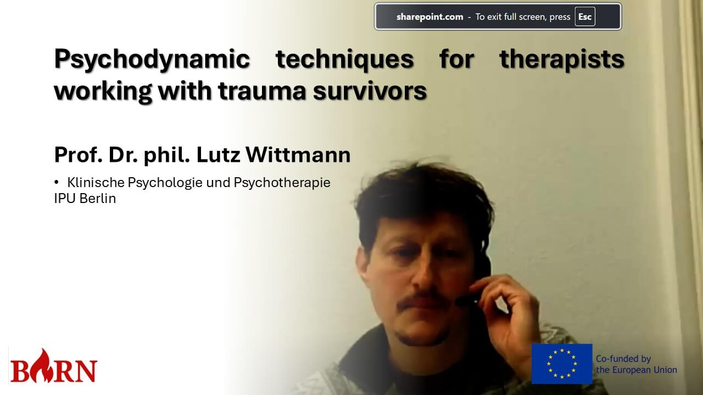
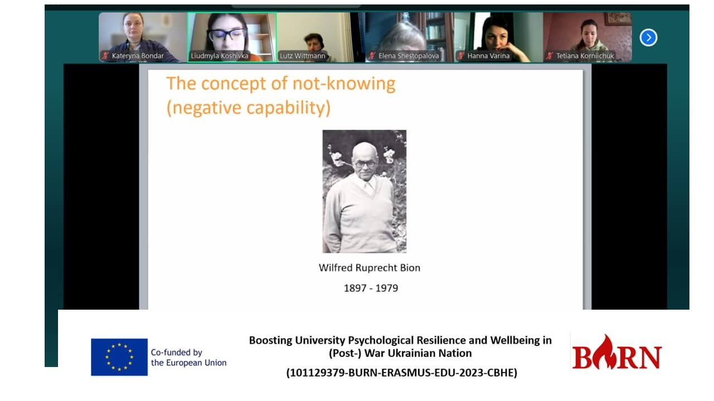
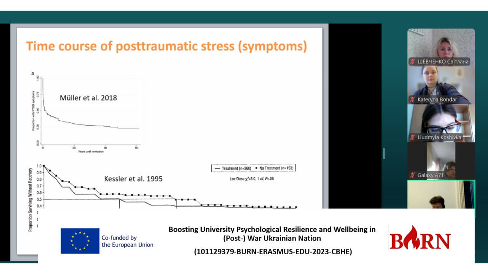

The Second Day of the Erasmus Winter Online School (January 14, 2025)
The second day, Jan 14 2025, of the winter school was led by Prof. Dr. phil. Lutz Wittmann, who focused on working with with trauma survivors. Lutz Wittmann introduced his own theoretical framework of psychotherapy intervention, which is rooted in Bion's concept of the unknown and draws on psychoanalytic perspectives that emphasize thematic experience rather than the individual's subjective account of traumatic events. He presented his original model based on statistical analysis of data collected from clients who had experienced various traumatic events.
Dr.Wittmann highlighted the importance of working with transference in therapy and emphasized the significance of autentic moments when clients disconnect or break off contact with the therapist. According to Lutz Wittmann, these moments serve as crucial starting points for therapy, allowing for a deeper analysis of the client's underlying experiences. Overall, the workshop explored various psychodynamic techniques and approaches used in working with traumatic experiences. Several case studies were discussed, presenting diverse clinical scenarios that required a comprehensive understanding of the origins of trauma and the therapist's intervention strategies.
 